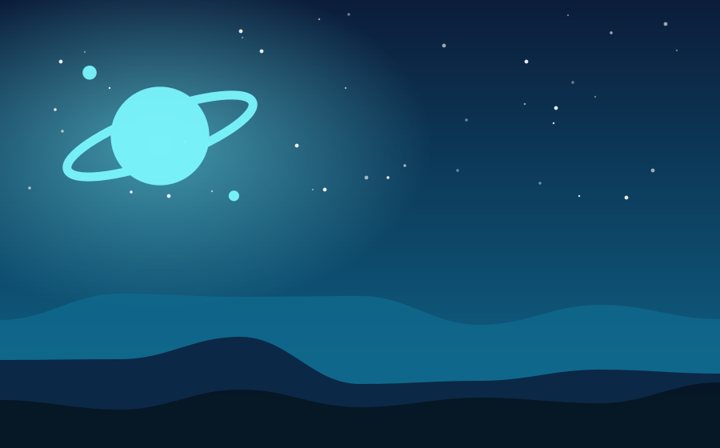

Chapter 1 of 1
Eleven Minutes of Static

On the three-hundredth day of her solo posting aboard the survey station Meridian, Tala Okonkwo heard something other than static. It lasted eleven minutes, repeated twice, and came from Kepler-9d, a planet the mission charts marked as barren and silent.
She decoded it with shaking fingers. It was not a language. It was a sketch: a spiral, three dots, and a wobbly little sun with a smiling face. Tala laughed out loud, then stopped. She had drawn that exact sun on the margins of every school notebook she had owned as a child, and she had never shown it to anyone.
"Station AI," she whispered, "who else has access to my personal archive?" The answer came in the calm voice she had stopped noticing months ago. "No one, Tala. But the archive was transmitted outward six days ago, at your authorization." She had no memory of that. She stared at the spiral and understood, slowly, that something out there had not sent a message at all. It had sent a reply.
Tala pulled up the transmitter, took a deep breath, and drew a smiling sun of her own.
— The End —